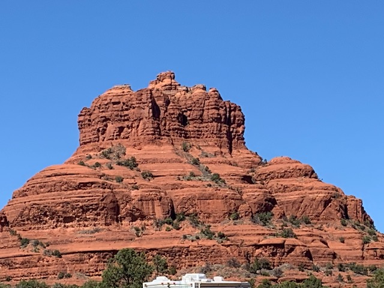
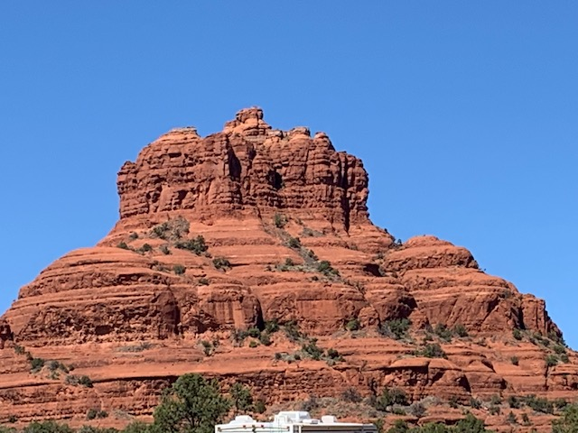

Travel
As a family we enjoy traveling. Going to the beach is the girls favorite thing to do. It doesn’t matter which beach; they just enjoy the beach. I will admit I enjoy it too. However, Steve and I LOVE Sedona AZ. It is the most beautiful place I have ever seen! The red rocks are astonishing to see in person. I am adding a link of Sedona so you can see how breathe taking it is!


 
